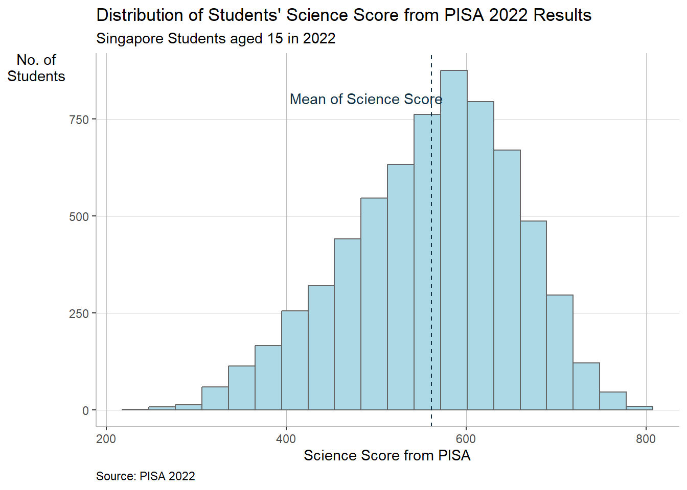
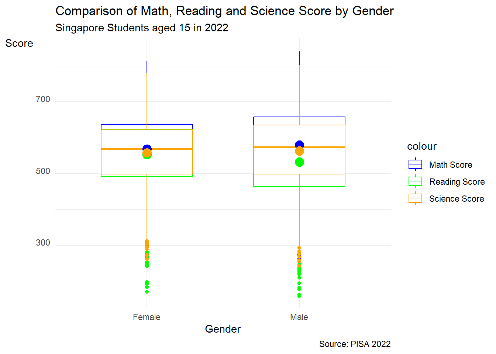

pacman::p_load(ggrepel, patchwork,
ggthemes, hrbrthemes,
tidyverse, haven,cowplot) Take-Home Exercise 2
1 Overview
In this take-home exercise, I will continue my visual analytics journey by selecting one of my classmate Take-Home Exercise 1 and critic the submission in terms of clarity and aesthetics.
2 Data Preparation and installing packages
I will follow the steps in which my classmate did.
I will use the following package:
- haven: Import and Export ‘SPSS’, ‘Stata’ and ‘SAS’ Files
- ggrepel: an R package provides geoms for ggplot2 to repel overlapping text labels.
- ggthemes: an R package provides some extra themes, geoms, and scales for ‘ggplot2’.
- hrbrthemes: an R package provides typography-centric themes and theme components for ggplot2.
- patchwork: an R package for preparing composite figure created using ggplot2.
Please refer this link here on how the data source is obtained 😊
stu_qqq_SG <- read_rds("data/stu_qqq_SG.rds")3 Data Wrangling
stu_qqq_SG_MRS <- stu_qqq_SG %>%
mutate(AVEMATH = (PV1MATH + PV2MATH + PV3MATH + PV4MATH + PV5MATH + PV6MATH + PV7MATH + PV8MATH + PV9MATH + PV10MATH ) / 10,
AVEREAD = (PV1READ + PV2READ + PV3READ + PV4READ + PV5READ + PV6READ + PV7READ + PV8READ + PV9READ + PV10READ )/ 10,
AVESCI = (PV1SCIE + PV2SCIE + PV3SCIE + PV4SCIE + PV5SCIE + PV6SCIE + PV7SCIE + PV8SCIE + PV9SCIE + PV10SCIE )/ 10)4 Critique 1
4.1 Original Design
The original design is shown below:
Histogram serves the purpose of displaying the distribution of the count of students in each subject.
4.2 Clarity
4.2.1 Graph Title
Interesting insight from the graph can be put as a main title. The graph title can be interesting to grab the attention of readers.
4.2.2 Axes Labelling
Axes labels must be meaningful to ensure readers are aware of what the axes represents. Names such as count is vague and can be improved to be more specific.
4.2.3 Adding of Mean
Mean or Median can be included to provide audience with a better interpretation of the distribution among the subjects.
4.3 Aesthetics
4.3.1 Colour
Histogram can be of different colour as compared to the background. Grey Background can be improved to give a more clean and professional look.
4.3.2 Title and Axes Label
In addition, the orientation of the histograms can be changed to ensure the title is readable. The rotation of y-axis label should be changed to ensure readability as well. Spelling of the y and x axis label can be adjusted accordingly to a give a more formal formatting (e.g. first letter of each word is capitalised while the rest is not)
4.4 Proposed sketch
4.5 Final Design
p1 <- ggplot(data=stu_qqq_SG_MRS,
aes(x = AVEMATH )) +
# plot histogram
geom_histogram(bins=20,
boundary = 100,
color="#666666",
fill="light blue") +
# add mean math score line
geom_vline(aes(xintercept = mean(AVEMATH)),
linetype= 'dashed',
size= .4,
color= '#0e2f44') +
# annotation for mean math score line
geom_text(aes(mean(AVEMATH), 65,
label= 'Mean of Math Score',
hjust= 1, vjust= -25),
check_overlap = T,
color= '#0e2f44') +
labs(y= 'No. of\nStudents', x= 'Math Score from PISA',
title = "Distribution of Students' Math Score from PISA 2022 Results",
subtitle= 'Singapore Students aged 15 in 2022',
caption = "Source: PISA 2022")+
theme(axis.title.y= element_text(angle=0),
axis.title.y.right = element_text(angle=0, vjust = 1),
panel.grid.major = element_line(color= 'grey', size = 0.1),
panel.background= element_blank(),
axis.line= element_line(color= 'grey'),
plot.caption = element_text(hjust = 0))
p1p2 <- ggplot(data=stu_qqq_SG_MRS,
aes(x = AVEREAD )) +
# plot histogram
geom_histogram(bins=20,
boundary = 100,
color="#666666",
fill="light blue") +
# add mean math reading line
geom_vline(aes(xintercept = mean(AVEREAD)),
linetype= 'dashed',
size= .4,
color= '#0e2f44') +
# annotation for mean reading score line
geom_text(aes(mean(AVEMATH), 65,
label= 'Mean of Reading Score',
hjust= 1, vjust= -25),
check_overlap = T,
color= '#0e2f44') +
labs(y= 'No. of\nStudents', x= 'Reading Score from PISA',
title = "Distribution of Students' Reading Score from PISA 2022 Results",
subtitle= 'Singapore Students aged 15 in 2022',
caption = "Source: PISA 2022")+
theme(axis.title.y= element_text(angle=0),
axis.title.y.right = element_text(angle=0, vjust = 1),
panel.grid.major = element_line(color= 'grey', size = 0.1),
panel.background= element_blank(),
axis.line= element_line(color= 'grey'),
plot.caption = element_text(hjust = 0))
p2p3 <- ggplot(data=stu_qqq_SG_MRS,
aes(x = AVESCI )) +
# plot histogram
geom_histogram(bins=20,
boundary = 100,
color="#666666",
fill="light blue") +
# add mean science reading line
geom_vline(aes(xintercept = mean(AVESCI)),
linetype= 'dashed',
size= .4,
color= '#0e2f44') +
# annotation for mean Science score line
geom_text(aes(mean(AVEMATH), 65,
label= 'Mean of Science Score',
hjust= 1, vjust= -25),
check_overlap = T,
color= '#0e2f44') +
labs(y= 'No. of\nStudents', x= 'Science Score from PISA',
title = "Distribution of Students' Science Score from PISA 2022 Results",
subtitle= 'Singapore Students aged 15 in 2022',
caption = "Source: PISA 2022")+
theme(axis.title.y= element_text(angle=0),
axis.title.y.right = element_text(angle=0, vjust = 1),
panel.grid.major = element_line(color= 'grey', size = 0.1),
panel.background= element_blank(),
axis.line= element_line(color= 'grey'),
plot.caption = element_text(hjust = 0))
p3
5 Critique 2
5.1 Original Design
The original design is shown below:
The above is a boxplot.
5.2 Clarity
5.1.1 Graph Title
Interesting insight from the graph can be put as a main title. The graph title should be interesting to grab the attention of readers. In addition, putting F and M may be misleading to the readers
5.2.1 Axes Labelling
Axes labels must be meaningful to ensure readers are aware of what the axes represents. Names such as AVEMATH and Factor() can be misleading and can be improved to be more specific.
5.3 Aesthetics
5.3.1 Colour
Grey Background can be improved to give a more clean and professional look.
5.3.2 Title and Axes Label
In addition, the orientation of the histograms can be changed to ensure the title is readable. The rotation of y-axis label should be changed to ensure readability as well. Spelling of the y and x axis label can be adjusted accordingly to a give a more formal formatting (e.g. first letter of each word is capitalised while the rest is not)
4.4 Propose sketch
5.5 Final Design
stu_qqq_SG_MRS_filtered <- stu_qqq_SG_MRS %>%
filter(ST004D01T == 1 | ST004D01T == 2)combined_boxplot <- ggplot(data = stu_qqq_SG_MRS_filtered,
aes(x = factor(ST004D01T), group = factor(ST004D01T))) +
geom_boxplot(aes(y = AVEMATH, color = "Math Score"), position = position_dodge(width = 0.75), width = 0.6) +
geom_boxplot(aes(y = AVEREAD, color = "Reading Score"), position = position_dodge(width = 0.75), width = 0.6) +
geom_boxplot(aes(y = AVESCI, color = "Science Score"), position = position_dodge(width = 0.75), width = 0.6) +
stat_summary(aes(y = AVEMATH), geom = "point", fun.y = "mean", color = "blue", position = position_dodge(width = 0.75), size = 4) +
stat_summary(aes(y = AVEREAD), geom = "point", fun.y = "mean", color = "green", position = position_dodge(width = 0.75), size = 4) +
stat_summary(aes(y = AVESCI), geom = "point", fun.y = "mean", color = "orange", position = position_dodge(width = 0.75), size = 4) +
scale_color_manual(values = c("Math Score" = "blue", "Reading Score" = "green", "Science Score" = "orange")) +
scale_x_discrete(labels = c("Female", "Male")) +
ggtitle("Comparison of Math, Reading and Science Score by Gender") +
labs(
subtitle= 'Singapore Students aged 15 in 2022',
caption = "Source: PISA 2022",
x = "Gender",
y = "Score"
) +
theme_minimal()+
theme(axis.text.y = element_text(angle = 90, hjust = 0, vjust = 0))
combined_boxplot